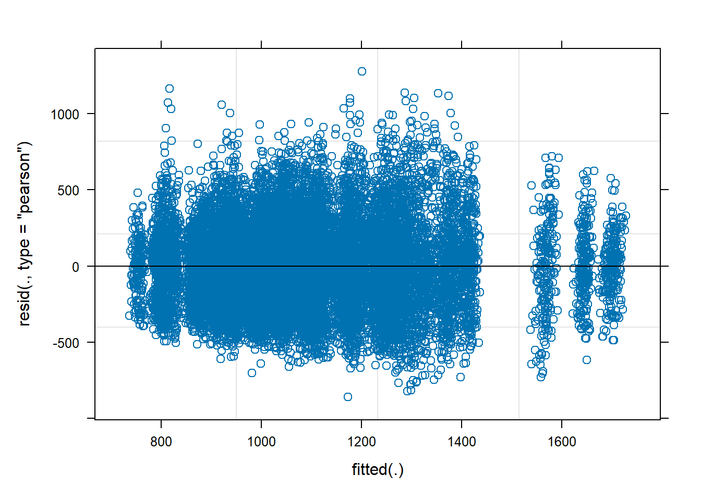

Chapter 3 Mixed Effects Models
Linear mixed effects models (also known as multilevel models) are used for cases in which there are multiple observations per participant, a violation of the linear regression independence assumption. Repeated measures ANOVA is one way to analyze this kind of data, but it has several shortcomings. It does not control for covariates well, does not handle missing observations within a subject, requires a continuous outcome on categorical predictors, and does not estimate the magnitude or direction of effects (Brown 2021). Linear mixed effects models address all of the shortcomings of repeated measures ANOVA, and can be generalized into categorical outcomes a well.
Mixed-effects models are called “mixed” because they simultaneously model fixed and random effects. Fixed effects are population-level effects that should persist across experiments. Random effects are level effects of some grouping factor such as participants. Random effects are included in mixed-effects models to account for the fact that the behavior of particular participants or items may differ from the average trend for unspecified reasons. Including random effects resolves the non-independence problem. The fixed-intercept estimate represents the average intercept, and random intercepts allow each predictor level to deviate from this average. Mixed-effects models account for differences in variability with fixed and random slopes. These deviations are assumed to follow a normal distribution with a mean of zero and a variance that is estimated by the model.
Mixed-effects models estimate additional parameters: correlations among random effects. For example, a model with by-participant random intercepts and slopes for a control variable, mixed-effects models estimate the correlations among the random intercepts and slopes. A negative correlation would suggest that individuals with higher intercepts (higher outcome values) tend to have lower slopes (control variable effects). Correlations can be informative about possible ceiling or floor effects. A negative correlation suggests that the control variable effect lessons for higher outcomes, meaning their is a ceiling that the process is pushing up against.
3.1 Linear Mixed Effects
Case Study
This case study uses data from Brown (2021)’s tutorial supplemental materials. A study presented 53 participants with 543 isolated words (stim), some in auditory modality and some in audiovisual modality. Participants (PID) repeated the words while performing an unrelated response time (RT) task in a tactile modality. We know audiovisual is better than audio alone for speech recognition, but what is the affect on a secondary task?
The initial summary table suggests audiovisual stimulation slows response times for the secondary task by about 10%.
cs1 <- list()
cs1$dat <- readr::read_csv("./input/mixed-effects-rt.csv", col_types = "cdcc") %>%
mutate(modality = factor(modality, levels = c("Audio-only", "Audiovisual")))
skimr::skim(cs1$dat)| Name | cs1$dat |
| Number of rows | 21679 |
| Number of columns | 4 |
| _______________________ | |
| Column type frequency: | |
| character | 2 |
| factor | 1 |
| numeric | 1 |
| ________________________ | |
| Group variables | None |
Variable type: character
| skim_variable | n_missing | complete_rate | min | max | empty | n_unique | whitespace |
|---|---|---|---|---|---|---|---|
| PID | 0 | 1 | 3 | 3 | 0 | 53 | 0 |
| stim | 0 | 1 | 3 | 6 | 0 | 543 | 0 |
Variable type: factor
| skim_variable | n_missing | complete_rate | ordered | n_unique | top_counts |
|---|---|---|---|---|---|
| modality | 0 | 1 | FALSE | 2 | Aud: 11032, Aud: 10647 |
Variable type: numeric
| skim_variable | n_missing | complete_rate | mean | sd | p0 | p25 | p50 | p75 | p100 | hist |
|---|---|---|---|---|---|---|---|---|---|---|
| RT | 0 | 1 | 1083.73 | 312.46 | 279 | 870 | 1057 | 1262 | 2488 | ▂▇▅▁▁ |
cs1$dat %>%
gtsummary::tbl_summary(
by = modality,
include = -c(PID, stim),
statistic = list(gtsummary::all_continuous() ~ "{mean}, {sd}")
)| Characteristic | Audio-only, N = 10,6471 | Audiovisual, N = 11,0321 |
|---|---|---|
| RT | 1,041, 302 | 1,125, 317 |
| 1 Mean, SD | ||
bind_rows(
Participants = cs1$dat %>% summarize(.by = c(modality, PID), M = mean(RT)),
Stimulis = cs1$dat %>% summarize(.by = c(modality, stim), M = mean(RT)),
.id = "Factor"
) %>%
mutate(grp = coalesce(PID, stim)) %>%
ggplot(aes(x = modality)) +
geom_line(aes(y = M, group = grp), alpha = .3) +
facet_wrap(facets = vars(Factor)) +
labs(title = "Modality Effect on Mean Response Times by Participant, Stimulas")If your model is predictive rather than inferential, split the data into training/testing data sets.
Fit the Model
Model modality as a fixed effect because you expect an average relationship between modality and response times that persists across participants and words. Model participants and words as random effects because they are randomly sampled and you expect variability within those populations. You can see that in the by-participant and by-stimulas plots in the prior section.
The basic syntax for a mixed-effects model for a single independent predictor and random intercepts for participants is
The pipe indicates the value to the left varies by the variable to the right. 1 means the intercept. Our model includes two random intercepts, the participant and the word.
You can model an interaction between the fixed effect variable(s) and random effects variable(s) by change the random intercept to the fixed effect variable so both the intercept and the slope can vary. The 1 inside the parentheses below is for clarity only - it’s implied in the formulation. However, if you want to remove the estimated correlation between two random effects, change the 1 to zero. (Brown 2021) explains that you would then have to add the variable back to get the random intercept, so you could instead have (0 + modality|PID) + (1|PID).
Fit the model using the tidymodels framework. If you want to continue using the classic methodology, the lme4 object is inside the tidymodels fit. The model fit returns a brief summary with the coefficients and model diagnostics.
If the model fit encounters convergence issues, Brown (2021) suggests using afex::all_fit() to test various optimizers. Of course, you should consider the model structure and data issues first.
cs1$model <- linear_reg() %>% set_engine("lmer")
cs1$fmla <- formula(RT ~ modality + (1 + modality|PID) + (1 + modality|stim))
cs1$fit <- cs1$model %>% fit(cs1$fmla, data = cs1$dat)
# The fit object returned by lmer(). You'll need this for interpretation and
# checking assumptions.
cs1$result <- cs1$fit %>% extract_fit_engine()
# If you are fitting a predictive model, use the training set.
cs1$fit_training <- cs1$model %>% fit(cs1$fmla, data = cs1$dat_training)
cs1$result %>% summary()## Linear mixed model fit by REML ['lmerMod']
## Formula: RT ~ modality + (1 + modality | PID) + (1 + modality | stim)
## Data: data
##
## REML criterion at convergence: 302385.7
##
## Scaled residuals:
## Min 1Q Median 3Q Max
## -3.3646 -0.6964 -0.0141 0.5886 5.0003
##
## Random effects:
## Groups Name Variance Std.Dev. Corr
## stim (Intercept) 304.0 17.44
## modalityAudiovisual 216.9 14.73 0.16
## PID (Intercept) 28559.0 168.99
## modalityAudiovisual 7709.0 87.80 -0.17
## Residual 65258.8 255.46
## Number of obs: 21679, groups: stim, 543; PID, 53
##
## Fixed effects:
## Estimate Std. Error t value
## (Intercept) 1044.14 23.36 44.700
## modalityAudiovisual 83.18 12.57 6.615
##
## Correlation of Fixed Effects:
## (Intr)
## modltyAdvsl -0.178Interpretation
The summary object shows the coefficients, but it’s easier to get at them by tidying the fit. Note that tidy() is in the broom.mixed package.
## # A tibble: 9 × 6
## effect group term estimate std.error statistic
## <chr> <chr> <chr> <dbl> <dbl> <dbl>
## 1 fixed <NA> (Intercept) 1044. 23.4 44.7
## 2 fixed <NA> modalityAudiovisual 83.2 12.6 6.61
## 3 ran_pars stim sd__(Intercept) 17.4 NA NA
## 4 ran_pars stim cor__(Intercept).modalityAudio… 0.155 NA NA
## 5 ran_pars stim sd__modalityAudiovisual 14.7 NA NA
## 6 ran_pars PID sd__(Intercept) 169. NA NA
## 7 ran_pars PID cor__(Intercept).modalityAudio… -0.165 NA NA
## 8 ran_pars PID sd__modalityAudiovisual 87.8 NA NA
## 9 ran_pars Residual sd__Observation 255. NA NAThe 1,044 ms intercept is the average response time for the reference case, audio modality and audiovisual modality increased response times by 83 ms over the reference case.
The random-effects estimates are the variation of response times around the fixed intercept and slope for each predictor. Response times varied around 1,044 ms by 17 ms for stim and 169 ms for PID. The modality effect on response times varied around 83 ms by 15 ms for stim and 88 ms for PID. That last point means a participant whose slope is 1 SD below the mean would have a slope near zero - a modality effect of zero.
The 0.16 correlation between the stimuli and fixed-effect intercepts indicates that stimuli with longer response times in the audio modality tended to have more positive slopes (stronger positive audiovisual effect). The -0.17 correlation between the participant and fixed-effect intercepts indicates that participants with longer response times in the audio modality tended to have a less positive slope (weaker positive, or possibly even a negative, audiovisual effect).
Model Assumptions
The linear regression model assumes the relationship between the predictors and the response is linear and the residuals are independent random variables normally distributed with mean zero and constant variance. Additionally, you will want to check for multicollinearity in the predictors because it can produce unreliable coefficient estimates and predicted values. The plot() function produces a set of diagnostic plots to test the assumptions.
The Residuals vs Fitted plot, \(e \sim \hat{Y}\), tests the linearity and equal error variances assumptions. The plot also identifies outliers. The polynomial trend line should show that the residuals vary around \(e = 0\) in a straight horizontal line (linearity). The residuals should have random scatter in a band of constant width around 0, and no fan shape at the low and high ends (equal variances). All tests and intervals are sensitive to the equal variances condition. The plot also reveals multicollinearity. If the residuals and fitted values are correlated, multicollinearity may be a problem.

Evaluate the Fit
Use likelihood ratio test to determine whether predictors affect the response variable. Compare the fit to a model without the predictor of interest. The likelihood ratio test is usually performed with the anova function, but there is a better way. afex::mixed(method = "LRT") performs the test for all fixed effects variables in the model. In this case study we have only one.
## Mixed Model Anova Table (Type 3 tests, LRT-method)
##
## Model: RT ~ modality + (1 + modality | PID) + (1 + modality | stim)
## Data: cs1$dat
## Df full model: 9
## Effect df Chisq p.value
## 1 modality 1 32.39 *** <.001
## ---
## Signif. codes: 0 '***' 0.001 '**' 0.01 '*' 0.05 '+' 0.1 ' ' 1The likelihood-ratio test indicated that the model including modality provided a better fit for the data than a model without it, \(\chi^2\)(1) = 32.4, p < .001.
Reporting
A likelihood-ratio test indicated that the model including modality provided a better fit for the data than a model without it, \(\chi^2\)(1) = 32.4, p < .001. Examination of the summary output for the full model indicated that response times were on average an estimated 83.2 ms slower in the audiovisual relative to the audio-only condition(\(\hat{\beta}\) = 83.2, SE = 12.6, t = 6.6).
| Characteristic | Beta | 95% CI1 |
|---|---|---|
| modality | ||
| Audio-only | — | — |
| Audiovisual | 83 | 59, 108 |
| 1 CI = Confidence Interval | ||